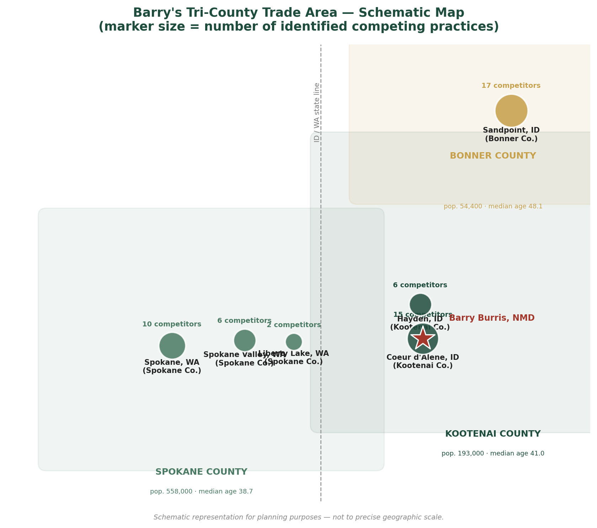
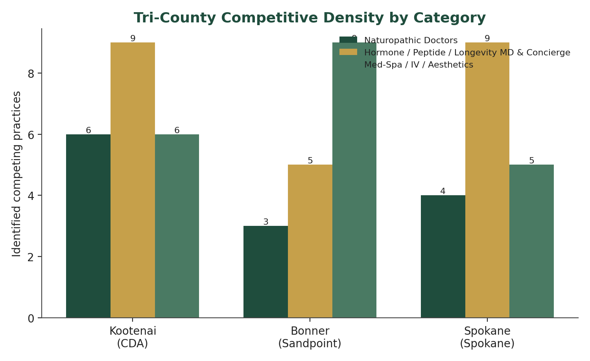
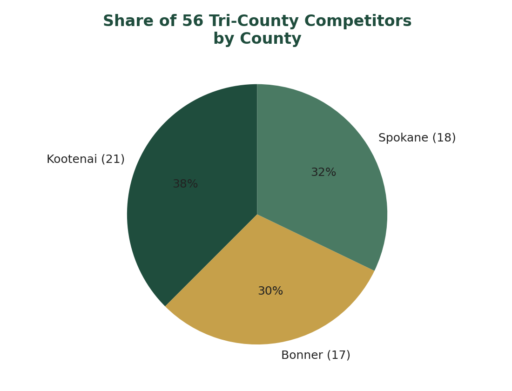
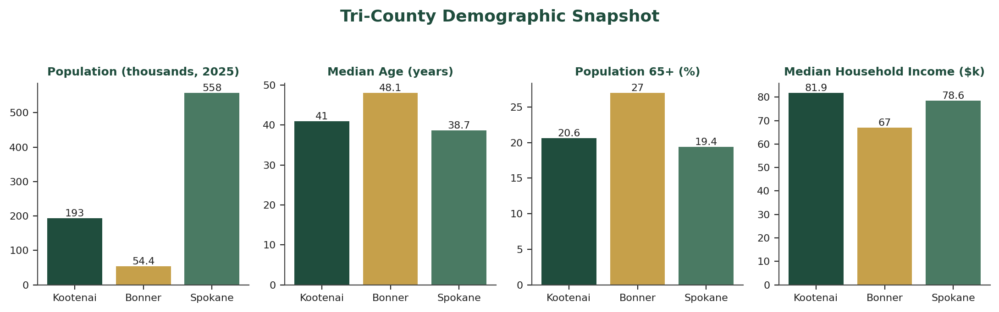
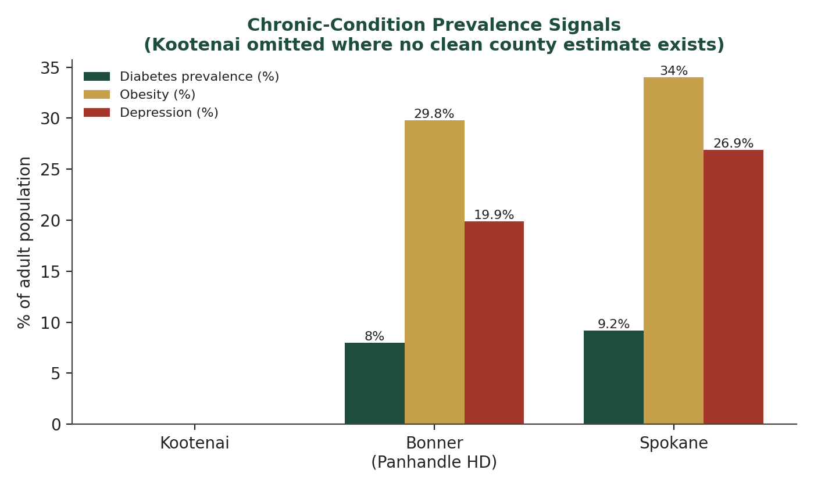

Market intelligence, competitive research, and patient-segment breakdowns — built for your practice, kept in one place, and updated as your market moves. Read a brief right here, or download the PDF for your records.
Latest brief
Your intelligence library
Three briefs so far — more will land here as your practice and your market keep moving.
AEHub PlatformMore Autonomous Than Ever
The machine behind your hub can see now
A real step toward the AEHub — the platform your practice runs on — becoming more autonomous than ever. The AI team inside it used to only read text; now the seats that design and build can actually see images, screens, and documents, and react to what's really there instead of guessing. Proven and live.
Published July 22, 2026 · Accelerated Experiences, LLC
What changed and why: your bee mark is transparent everywhere in the hub now (except the decorative dashboard watermark), and Brian — your in-hub assistant — is now grounded in the full tri-county competitive research, so you can ask him market questions live instead of digging through a PDF.
Published July 18, 2026 · Accelerated Experiences, LLC · 1-page PDF
Kootenai, Bonner & Spokane counties, broken out individually and combined — 56 competing practices mapped, your 868-contact referral network re-audited and tagged, a target-partner profile, and four probable-patient segments in plain English.
Published July 2026 · Accelerated Experiences, LLC · 12-page PDF + full read below
Steps toward the AEHub becoming more autonomous than ever
Prepared by Accelerated Experiences, LLC — July 22, 2026
The short version
Your hub is built on the AEHub — the same platform Accelerated Experiences is turning into a company that can run more of itself. This week it took a real step toward that: the AI team inside the platform can now see. Not "read the words on a page" — actually look at an image, a screen, a mockup, or a document and react to what's genuinely there.
Why that matters
Until now, the platform's specialists could read text but were blind to anything visual. Hand them a picture, a chart, or a screenshot and they'd answer from memory and hope — the way a person guesses at a photo described to them over the phone. That's the single biggest reason "AI that does it for you" quietly gets things wrong.
Now the seats that design, build, and coordinate can open the actual picture and tell you exactly what's in it. We proved it honestly: we handed the design lead an image with a random code on it she could not possibly guess, and she read it back word for word. Only a system that truly sees can do that.
Autonomy isn't the machine deciding for you. It's the machine doing more of the work correctly on its own — and staying honest about what it can and can't do. Seeing is a big piece of that.
What it means for your practice
The platform behind your hub keeps getting more capable without you lifting a finger or paying more — the same hub, quietly smarter.
As this rolls forward, the tools that touch your practice can look at real things — a lab sheet, a form, a photo — instead of only text.
The guardrails don't move: nothing gets sent, published, or changed on your behalf without a human saying yes. More capable, still on a leash.
You bring the medicine; we keep sharpening the machine. This is one more step toward a hub that carries more of the load for you.
The bee mark, cleaned up — and a market research department, live in your hub
Prepared by Accelerated Experiences, LLC — July 18, 2026
What's new — plain English
1. Your bee mark is clean now. Every place the bee showed up inline — the sidebar, the tab icon, the top of every page — used to sit inside a solid navy circle. That's gone. The bee is transparent everywhere now, so it sits on your parchment background the way it should, not boxed in. The one exception is on purpose: the big decorative bee watermark behind your dashboard greeting still uses the solid gold coin version — that's a background/wallpaper element, not a mark, so it stays as-is. Live across every page of the hub.
2. You now have a market research department — not just a one-time report. The tri-county competitive research (56 practices across Kootenai, Bonner, and Spokane, your referral network, your patient segments) used to live only in this section and its PDF. Now Brian — your in-hub assistant — actually knows it. There's a new 📊 Market research button when you open Brian, and you can ask him things straight, like “what am I missing that other practices in my market have” or “who should I be courting for referrals” — and he'll answer from the real research, not a guess. If something's outside what's been researched, he'll tell you that plainly instead of making it up.
What this means for you
“Briefs from AE” stays your home for the full report — the maps, the charts, the county-by-county breakdown, the complete referral-partner profile and patient segments. Nothing there changed.
Brian is now the fast way in. Instead of digging through the PDF mid-day, just ask him. He'll cite what's in the research and point you back to the full brief for the rest.
As we run fresh research — a new competitor, an updated referral list, a different county — it gets added to what Brian knows, so this stays current instead of going stale like a one-time PDF would.
You asked what you were missing. Now the hub can just tell you.
Prepared by Accelerated Experiences, LLC — July 2026
Executive Summary
Barry's referral network (868 contacts, spanning 12 states) has been re-audited and re-tagged. The relevant finding for day-to-day strategy isn't the size of the list — it's that only a small slice of it sits inside Barry's actual trade area. Of 92 naturopathic-credentialed contacts on the full list, 17 are true local competitors (same license, same drive-time, same patient pool) and 75 are extended-network peers — professional colleagues in other states who will never compete for a Coeur d'Alene patient, but are exactly the kind of people worth a phone call, a conference introduction, or a referral relationship if Barry ever expands, teaches, or refers a relocating patient. 106 entries are flagged “thin” — real businesses with too little public documentation to act on confidently, not fabricated or removed, just marked for a manual check before outreach.
Beyond the referral list, fresh research mapped the actual competitive battlefield: 56 practices across Kootenai, Bonner, and Spokane counties compete with Barry for the same patient, once you count not just other NMDs but the hormone clinics, med-spas, peptide-therapy shops, and concierge primary-care practices chasing the same "feel better, live longer" customer — roughly triple the naturopath-only count most people would assume.
The three counties are not one market. Kootenai is the home turf — dense, competitive, growing fast. Bonner is smaller, older, more seasonal — real room for a longevity-forward brand. Spokane is the big one next door — six times Kootenai's population, more institutional competition, and at least one direct competitor (Clinic 5C) that has already expanded into Coeur d'Alene itself.
Part 1 — Referral Network Re-Audit
Every one of the 868 rows on Barry's referral list now carries three new tags in the live Directory: Zone (local vs. extended), Competitor (true only for local-zone NMDs), and Thin (flagged for manual verification before outreach).
Metric
Count
Total referral network
868
Local trade area (Kootenai + Bonner + Spokane)
71
Extended network (other states/regions)
797
Naturopathic Doctors, total
92
— Local competitors
17
— Extended-network peers
75
Flagged "thin" (needs manual verification)
106
This directly answers the "obscure businesses in weird states" problem: those entries aren't wrong, they're correctly filed as extended network — visible and filterable in the Directory via the Zone filter and the "⚔️ Local competitors" quick-filter chip.
Part 2 — Competitive Landscape, County by County

Figure 1. Barry's tri-county trade area (schematic — marker size = competitors identified per city).
2.1 Kootenai County — Home Market
Kootenai is Barry's home turf, and it's crowded. 21 practices were identified competing for the same patient — more than in Bonner or Spokane individually, despite Kootenai having a fraction of Spokane's population. Six are naturopathic/functional-medicine practices (including Vital Health, 40+ years established — the longest local tenure found anywhere in the tri-county area); nine are hormone/peptide/concierge-medicine operations; six are med-spa/IV/weight-loss clinics (North Idaho Med Spa has the strongest visible review presence locally; NorthLife, opened 2022, is the fastest-growing entrant).
Population ~193,000 (2025), growing ~1.8%/year, up 28% over the last decade. Median age 41.0, 20.6% of the population 65+. Median household income $81,861. Kootenai's growth is substantially retiree in-migration — the 65+ population more than doubled between 2001 and 2019, over half from people moving in from California and Washington. Housing costs run 14–19% above the national average, filtering for real purchasing power, and the county has a well-documented pattern of self-pay-oriented, institution-skeptical in-migration — directly aligned with Barry's positioning.
2.2 Bonner County — Sandpoint, Secondary Market
Bonner is smaller (54,400 people) but structurally different: it's the oldest of the three counties (median age 48.1, ~42% of the population 55+) with a huge second-home/seasonal-resident base — 86% of vacant housing units are for seasonal or recreational use, and average home values ($657K) run well above Kootenai's.
17 competing practices were identified, clustered almost entirely in downtown Sandpoint. Three are true naturopathic peers; the rest split between concierge/DPC-style practices and a dense med-spa/aesthetics cluster (Signature Aesthetics — 108+ reviews, the strongest-reviewed practice in the county). Census migration-flow data already showed a net gain of 270 movers from LA County alone; local real-estate brokers describe continued relocation from California and western Washington as an ongoing pattern, not a one-time COVID spike. A 2022 community health survey named mental health as the single most-cited community concern (58% of respondents) — ahead of obesity or access to care.
2.3 Spokane County — Adjacent Major Metro
Spokane is the market Kootenai and Bonner both feed into and compete against — six times Kootenai's population (558,000) at a younger median age (38.7). 18 competing practices were identified, more institutionally competitive than either Idaho county (Providence and MultiCare together employ over 10,000 locally). Four are confirmed local NMD peers; nine are MD/DO/NP-led hormone/peptide/longevity practices (The Metabolic Institute, est. 2005, is the longest-tenured functional-medicine practice found anywhere in this research); five are med-spa/IV/aesthetics operators.
Watch this one directly: Clinic 5C — a Spokane-based cosmetic-plus-functional-medicine practice with a strong review record (RealSelf 4.8★/393 reviews) — has apparently opened or expanded a Coeur d'Alene location as of mid-2026. That converts Clinic 5C from an adjacent-market competitor into a direct, in-market one. Worth confirming with a call or site visit, since this surfaced from search results rather than a verified announcement.
2.4 Combined Tri-County View

Figure 2. Competitor density by category and county.

Figure 3. Share of the 56 tri-county competitors, by county.
Across all three counties, 56 practices compete with Barry for some slice of the same patient. Kootenai accounts for the largest single share (21, 38%), followed by Spokane (18, 32%) and Bonner (17, 30%) — meaning Bonner, despite being far smaller by population, punches roughly at parity on competitor count, a market-maturity signal driven by its older, more affluent, seasonal-resident base. The tri-county area totals roughly 806,000 people, with the 65+ population alone exceeding 150,000 — larger than many mid-size metro areas, within an hour's drive of Barry's practice.

Figure 4. Tri-county demographic snapshot.

Figure 5. Chronic-condition prevalence signals (Kootenai omitted where no clean county estimate exists — flagged, not fabricated).
Part 3 — Target Partner Profile (Referral ICP)
Not every complementary practitioner on Barry's list is worth the same outreach effort. The ideal referral partner: (1) practices a non-competing modality — chiropractic, acupuncture, physical therapy, mental-health/counseling; (2) is independently owned, not health-system-affiliated; (3) runs a cash-pay or hybrid billing model; (4) has been established 3+ years with an active digital presence; (5) already serves an older or wellness-oriented patient base; (6) sits geographically inside the local trade area.
Highest priority, in order: mobility-focused chiropractors/physical therapists → acupuncturists positioned around chronic pain or fertility → mental-health counselors serving professional/executive clients → concierge/DPC practices that need a hormone/nutrition specialist to refer to → purely aesthetic med-spas with no hormone/IV overlap. Deprioritize: anything on the "thin" list until verified, hospital-employed practices, and every entry flagged competitor: true.
Part 4 — Probable Patient Market: Four Segments
Segment
Geography
Who they are
A. Relocated Retiree Optimizer
Kootenai lakefront/golf, Bonner second-home areas
60–75, retired, relocated from CA/WA, wants autonomy from institutional medicine, motivated by staying active — the largest, most self-pay-ready segment (150,000+ people 65+ tri-county).
Any age, already been through conventional care without resolution, will pay out of pocket for root-cause answers — the highest-intent segment, often referral-driven.
D. Second-Home/Seasonal Visitor
Bonner County — Sandpoint, Schweitzer, Lake Pend Oreille
45–70, owns a second home, wants low-friction telehealth/flexible scheduling, currently unclaimed by any Bonner County competitor identified.
Part 5 — What This Means, Practically
Start referral outreach with the 71 local-zone contacts, prioritized by the Part 3 profile — the extended-network 797 are a real asset for later, not this quarter's priority.
The 17 local NMD competitors aren't outreach targets — they're the honest baseline for how crowded the ND credential is locally. Differentiation has to come from more than the credential itself.
Bonner County is underrated — smallest by population, but the oldest, most affluent, most seasonally-flexible patient base, with Segment D currently unclaimed.
Confirm the Clinic 5C Coeur d'Alene expansion directly — if real, it's Barry's most credible in-market competitor.
This page is the place to keep this intelligence live going forward, instead of a one-time PDF that goes stale.
Sources: U.S. Census Bureau (QuickFacts, ACS, Decennial Census), Idaho Department of Labor, Washington State Office of Financial Management, County Health Rankings & Roadmaps, CDC PLACES, Kootenai Health Community Health Needs Assessment (Dec. 2025), Bonner General Health Community Health Needs Assessment (2022), Zillow, Redfin, individual practice websites and public review platforms. Figures without a clean sourced point estimate are noted as such rather than approximated.